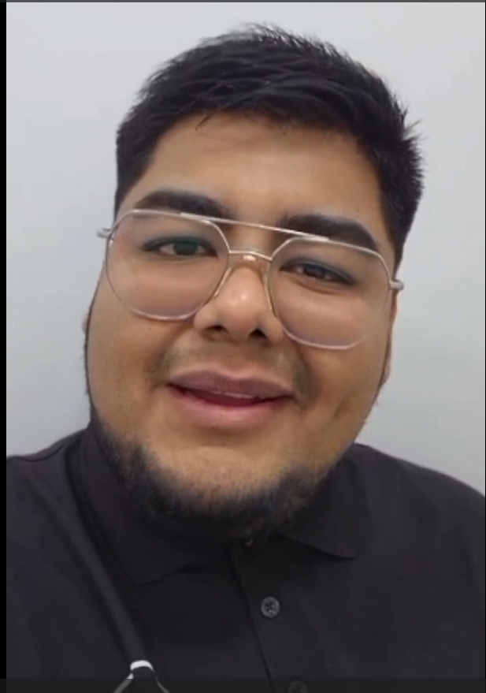

“
Fue una experiencia muy transformadora, me hizo ver aspectos de mi vida que necesitaban atención y también me dio esa paz que buscaba. Fue una guía para mi crecimiento personal, muy cañón.

Manny
Proceso individual